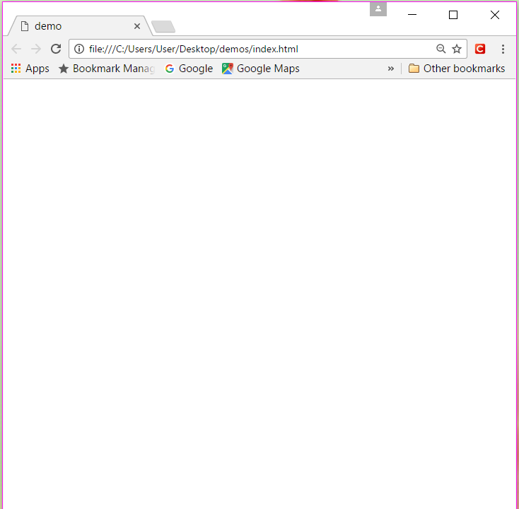

How to use the Google-developer tool to write CSS scripts
I have captured the steps to use the inspector tool
in Google Chrome to write the CSS scripts
in a series of screenshots.
Please click on the buttons
to see the screenshots
0
1
2
3
4
5
6
7
8
